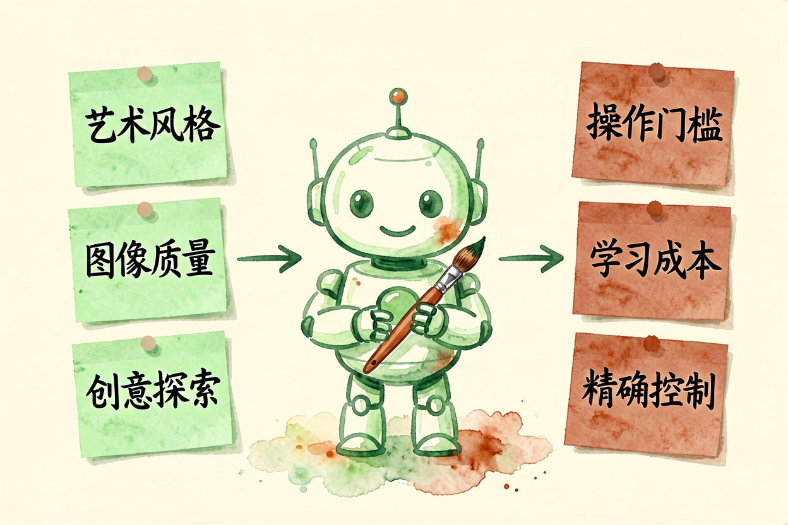

Midjourney新手入门：从零学会AI图像生成与参数设置
想快速学会AI图像生成？本文从零讲起，带你掌握提示词编写与参数设置的核心技巧。
Midjourney新手入门是本文的核心主题，下面详细介绍如何使用。
Midjourney新手入门：了解AI图像生成

Midjourney是目前最流行的AI图像生成工具之一，以高质量和艺术风格著称。它通过Discord平台运行，用户输入提示词后，AI生成四张图像供选择。新手使用Midjourney前，先理解它的特点和局限。
Midjourney的优势在于艺术风格和图像质量，劣势在于操作门槛高、学习成本大。它不适合需要精确控制的商业设计，更适合创意探索和艺术创作。理解这一点，才能合理使用。
Midjourney新手入门：注册与Discord设置

使用Midjourney需要Discord账号和Midjourney订阅。注册Discord后，加入Midjourney官方服务器，输入订阅码激活。订阅分基础版和标准版，基础版适合新手练习，标准版提供更多功能和更快生成速度。
进入服务器后，找到「newbie」频道，输入「/imagine」命令开始生成图像。提示词输入格式为「/imagine 提示词」，AI会生成四张图像供选择。新手建议从简单提示词开始，比如「a cute cat sitting on a window」。
Midjourney新手入门：提示词写作

Midjourney新手入门的重点是提示词写作。好的提示词包含：主体描述、风格指定、参数设置。比如「a cute cat, watercolor style, soft lighting, --ar 16:9 --v 6」。主体描述要具体，风格指定要明确，参数设置要合适。
参考AI图像生成教程中的提示词原则，Midjourney同样适用。风格关键词可以参考Midjourney官方示例库，学习成熟的提示词结构。参数方面，--ar控制宽高比，--v控制版本，--style控制风格强度。
Midjourney提示词示例：
/imagine a futuristic city, cyberpunk style, neon lights, --ar 16:9 --v 6 --style rawMidjourney新手入门：风格与参数控制

Midjourney新手入门的进阶是风格控制和参数设置。--style参数可以设置风格强度，从0到1000，数值越大风格越强烈。--ar参数设置宽高比，常用16:9、4:3、1:1。--v参数选择模型版本，v6是最新版本，质量最高。
组合参数可以产生丰富效果。比如「/imagine a futuristic city, cyberpunk style --ar 16:9 --style 500 --v 6」会生成宽屏赛博朋克风格的城市图像。参考AI去除图片文字中的图像处理技巧，了解Midjourney在后期处理中的应用。
Midjourney新手入门：注意事项

Midjourney新手入门过程中，要注意几个问题。不要期望一次生成完美图像，需要多次迭代调整。不要使用敏感提示词，会被系统拒绝。不要依赖Midjourney的商业授权，使用前查看官方条款。
使用Midjourney时，记住它是创意工具，不是生产工具。生成的图像可能需要后期处理才能用于商业用途。参考AI图像编辑工具对比，了解后期处理的工具选择。别让Midjourney替代你的创意判断，它只是工具，关键质量仍要自己把关。不要盲目信任AI生成的每一张图像。
Midjourney新手入门：实际出图案例

Midjourney的实际出图效果非常惊艳。一个典型提示词是「/imagine a serene lake surrounded by mountains, sunrise, reflection on water, photorealistic, 8K」，AI会生成四张高质量图像供你选择。你可以用Zoom In放大细节，用Vary Region重新生成局部，用Upscale提升分辨率。另一个实用场景是生成品牌视觉素材，比如「/imagine minimalist logo design, geometric shapes, blue and white color scheme, professional」，可以一次性获得多个设计方向供选择。以上是关于Midjourney新手入门的完整指南。 别让AI工具替代你的思考，关键决策仍要自己把关。不要盲目信任AI生成的内容。

本文信息核对于 2026-09-07。AI 产品的价格、免费额度与功能变动频繁，实际以各工具官网当前说明为准。